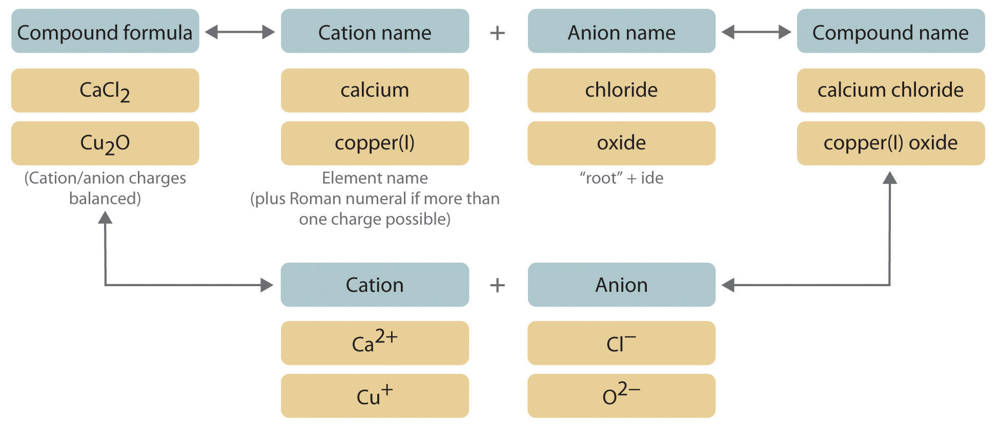
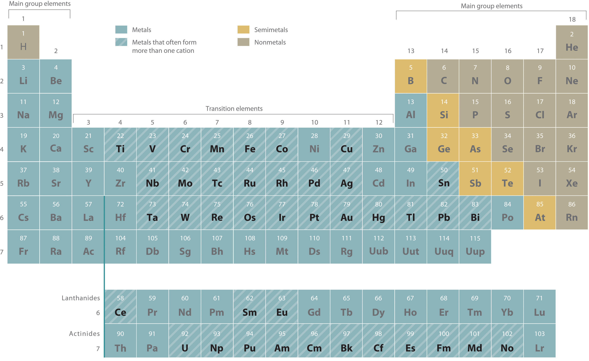
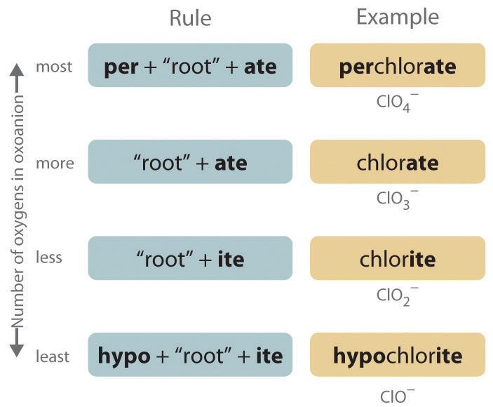

The empirical and molecular formulas discussed in the preceding section are precise and highly informative, but they have some disadvantages. First, they are inconvenient for routine verbal communication. For example, saying “C-A-three-P-O-four-two” for Ca3(PO4)2 is much more difficult than saying “calcium phosphate.” In addition, you will see in Section 2.4 "Naming Covalent Compounds" that many compounds have the same empirical and molecular formulas but different arrangements of atoms, which result in very different chemical and physical properties. In such cases, it is necessary for the compounds to have different names that distinguish among the possible arrangements.
Many compounds, particularly those that have been known for a relatively long time, have more than one name: a common name (sometimes more than one) and a systematic name, which is the name assigned by adhering to specific rules. Like the names of most elements, the common names of chemical compounds generally have historical origins, although they often appear to be unrelated to the compounds of interest. For example, the systematic name for KNO3 is potassium nitrate, but its common name is saltpeter.
In this text, we use a systematic nomenclature to assign meaningful names to the millions of known substances. Unfortunately, some chemicals that are widely used in commerce and industry are still known almost exclusively by their common names; in such cases, you must be familiar with the common name as well as the systematic one. The objective of this and the next two sections is to teach you to write the formula for a simple inorganic compound from its name—and vice versa—and introduce you to some of the more frequently encountered common names.
We begin with binary ionic compounds, which contain only two elements. The procedure for naming such compounds is outlined in Figure 2.10 "Naming an Ionic Compound" and uses the following steps:
Figure 2.10 Naming an Ionic Compound
Name the cation.
Metals that form more than one cation. As shown in Figure 2.11 "Metals That Form More Than One Cation and Their Locations in the Periodic Table", many metals can form more than one cation. This behavior is observed for most transition metals, many actinides, and the heaviest elements of groups 13–15. In such cases, the positive charge on the metal is indicated by a roman numeral in parentheses immediately following the name of the metal. Thus Cu+ is copper(I) (read as “copper one”), Fe2+ is iron(II), Fe3+ is iron(III), Sn2+ is tin(II), and Sn4+ is tin(IV).
An older system of nomenclature for such cations is still widely used, however. The name of the cation with the higher charge is formed from the root of the element’s Latin name with the suffix -ic attached, and the name of the cation with the lower charge has the same root with the suffix -ous. The names of Fe3+, Fe2+, Sn4+, and Sn2+ are therefore ferric, ferrous, stannic, and stannous, respectively. Even though this text uses the systematic names with roman numerals, you should be able to recognize these common names because they are still often used. For example, on the label of your dentist’s fluoride rinse, the compound chemists call tin(II) fluoride is usually listed as stannous fluoride.
Some examples of metals that form more than one cation are in Table 2.5 "Common Cations of Metals That Form More Than One Ion" along with the names of the ions. Note that the simple Hg+ cation does not occur in chemical compounds. Instead, all compounds of mercury(I) contain a dimeric cation, Hg22+, in which the two Hg atoms are bonded together.
Table 2.5 Common Cations of Metals That Form More Than One Ion
| Cation | Systematic Name | Common Name | Cation | Systematic Name | Common Name |
|---|---|---|---|---|---|
| Cr2+ | chromium(II) | chromous | Cu2+ | copper(II) | cupric |
| Cr3+ | chromium(III) | chromic | Cu+ | copper(I) | cuprous |
| Mn2+ | manganese(II) | manganous* | Hg2+ | mercury(II) | mercuric |
| Mn3+ | manganese(III) | manganic* | Hg22+ | mercury(I) | mercurous† |
| Fe2+ | iron(II) | ferrous | Sn4+ | tin(IV) | stannic |
| Fe3+ | iron(III) | ferric | Sn2+ | tin(II) | stannous |
| Co2+ | cobalt(II) | cobaltous* | Pb4+ | lead(IV) | plumbic* |
| Co3+ | cobalt(III) | cobaltic* | Pb2+ | lead(II) | plumbous* |
| * Not widely used. | |||||
| †The isolated mercury(I) ion exists only as the gaseous ion. | |||||
Name the anion.
Polyatomic anions. Polyatomic anions typically have common names that you must learn; some examples are in Table 2.4 "Common Polyatomic Ions and Their Names". Polyatomic anions that contain a single metal or nonmetal atom plus one or more oxygen atoms are called oxoanions (or oxyanions). In cases where only two oxoanions are known for an element, the name of the oxoanion with more oxygen atoms ends in -ate, and the name of the oxoanion with fewer oxygen atoms ends in -ite. For example, NO3− is nitrate and NO2− is nitrite.
The halogens and some of the transition metals form more extensive series of oxoanions with as many as four members. In the names of these oxoanions, the prefix per- is used to identify the oxoanion with the most oxygen (so that ClO4− is perchlorate and ClO3− is chlorate), and the prefix hypo- is used to identify the anion with the fewest oxygen (ClO2− is chlorite and ClO− is hypochlorite). The relationship between the names of oxoanions and the number of oxygen atoms present is diagrammed in Figure 2.12 "The Relationship between the Names of Oxoanions and the Number of Oxygen Atoms Present". Differentiating the oxoanions in such a series is no trivial matter. For example, the hypochlorite ion is the active ingredient in laundry bleach and swimming pool disinfectant, but compounds that contain the perchlorate ion can explode if they come into contact with organic substances.
Write the name of the compound as the name of the cation followed by the name of the anion.
It is not necessary to indicate the number of cations or anions present per formula unit in the name of an ionic compound because this information is implied by the charges on the ions. You must consider the charge of the ions when writing the formula for an ionic compound from its name, however. Because the charge on the chloride ion is −1 and the charge on the calcium ion is +2, for example, consistent with their positions in the periodic table, simple arithmetic tells you that calcium chloride must contain twice as many chloride ions as calcium ions to maintain electrical neutrality. Thus the formula is CaCl2. Similarly, calcium phosphate must be Ca3(PO4)2 because the cation and the anion have charges of +2 and −3, respectively. The best way to learn how to name ionic compounds is to work through a few examples, referring to Figure 2.10 "Naming an Ionic Compound", Table 2.2 "Some Common Monatomic Ions and Their Names", Table 2.4 "Common Polyatomic Ions and Their Names", and Table 2.5 "Common Cations of Metals That Form More Than One Ion" as needed.
Figure 2.11 Metals That Form More Than One Cation and Their Locations in the Periodic Table
With only a few exceptions, these metals are usually transition metals or actinides.
Figure 2.12 The Relationship between the Names of Oxoanions and the Number of Oxygen Atoms Present
Cations are always named before anions.
Most transition metals, many actinides, and the heaviest elements of groups 13–15 can form more than one cation.
Write the systematic name (and the common name if applicable) for each ionic compound.
Given: empirical formula
Asked for: name
Strategy:
A If only one charge is possible for the cation, give its name, consulting Table 2.2 "Some Common Monatomic Ions and Their Names" or Table 2.4 "Common Polyatomic Ions and Their Names" if necessary. If the cation can have more than one charge (Table 2.5 "Common Cations of Metals That Form More Than One Ion"), specify the charge using roman numerals.
B If the anion does not contain oxygen, name it according to step 3a, using Table 2.2 "Some Common Monatomic Ions and Their Names" and Table 2.4 "Common Polyatomic Ions and Their Names" if necessary. For polyatomic anions that contain oxygen, use Table 2.4 "Common Polyatomic Ions and Their Names" and the appropriate prefix and suffix listed in step 3b.
C Beginning with the cation, write the name of the compound.
Solution:
Cu2O. The bottom of a boat is protected with a red antifouling paint containing copper(I) oxide, Cu2O.
Exercise
Write the systematic name (and the common name if applicable) for each ionic compound.
Answer:
Write the formula for each compound.
Given: systematic name
Asked for: formula
Strategy:
A Identify the cation and its charge using the location of the element in the periodic table and Table 2.2 "Some Common Monatomic Ions and Their Names", Table 2.3 "The Physical Properties of Typical Ionic Compounds and Covalent Molecular Substances", Table 2.4 "Common Polyatomic Ions and Their Names", and Table 2.5 "Common Cations of Metals That Form More Than One Ion". If the cation is derived from a metal that can form cations with different charges, use the appropriate roman numeral or suffix to indicate its charge.
B Identify the anion using Table 2.2 "Some Common Monatomic Ions and Their Names" and Table 2.4 "Common Polyatomic Ions and Their Names". Beginning with the cation, write the compound’s formula and then determine the number of cations and anions needed to achieve electrical neutrality.
Solution:
Cr2O3. Chromium(III) oxide (Cr2O3) is a common pigment in dark green paints, such as camouflage paint.
Exercise
Write the formula for each compound.
Answer:
Ionic compounds are named according to systematic procedures, although common names are widely used. Systematic nomenclature enables us to write the structure of any compound from its name and vice versa. Ionic compounds are named by writing the cation first, followed by the anion. If a metal can form cations with more than one charge, the charge is indicated by roman numerals in parentheses following the name of the metal. Oxoanions are polyatomic anions that contain a single metal or nonmetal atom and one or more oxygen atoms.
Name each cation.
Name each anion.
Name each anion.
Name each anion.
Name each compound.
Name each compound.
Name each compound.
Name each compound.
Name each compound.
For each ionic compound, name the cation and the anion and give the charge on each ion.
For each ionic compound, name the cation and the anion and give the charge on each ion.
Write the formula for each compound.
Write the formula for each compound.
Write the formula for each compound.
Write the formula for each compound.
Write the formula for each compound.
Write the formula for each compound.
Write the formula for each compound.